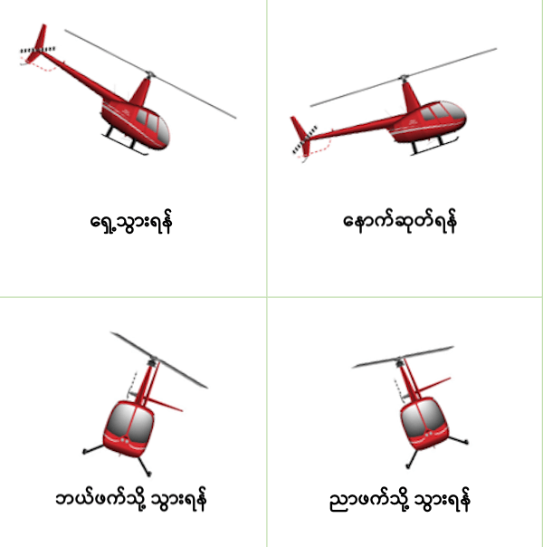
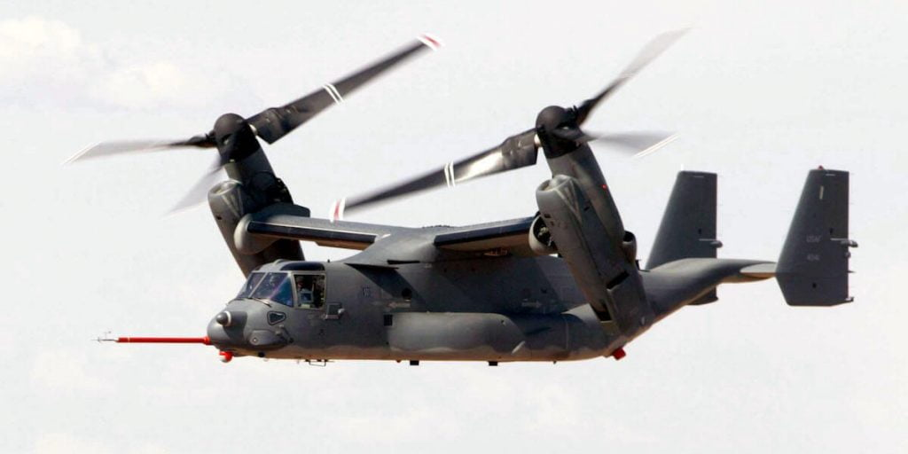

လေယာဉ်ပျံ တီထွင်ခဲ့တဲ့ ရိုက်ညီနောင် တို့ကို သိတဲ့သူ များပေမယ့် ဟယ်လီ ကော်ပတာခေါ် ရဟတ်ယာဉ် တည်ထွင်ခဲ့တဲ့သူရဲ့ အမည်ကိုတော့ သိတဲ့သူ အတော်လေး ရှားပါတယ်။ ဒါပေမယ့် သူ့နာမည်ပေးထားတဲ့ ဆိုင်ကောစကီး ရဟတ်ယာဉ် အမည်ကိုတော့ ကြားဖူးကြမှာပါ။ (ဟုတ်ပါတယ်။ ဒီရဟတ်ယာဉ်ဟာ သူတည်ထောင်တဲ့ကုမ္ပဏီကနေ ထုတ်တာ ဖြစ်ပါတယ်။)
သမိုင်းကြောင်း
ရဟတ်ယာဉ်ဟာ စတင် တီထွင်စ ကတဲက လူအများကြားထဲမှာ အတော်လေး ထူးဆန်းတဲ့ ယာဉ်အဖြစ် မြင်ခဲ့ကြပါတယ်။ လေယာဉ်လို ပြေးလမ်း မလို၊ အတောင်ပံ မပါသလို လေထဲမှာလဲ အထက်အောက်၊ ဘယ်ညာ၊ ရှေ့တိုးနောက်ငင် ကြိုက်သလို ရွှေ့လျှားလို့ ရတဲ့ ဒီ ယာဉ်ဟာ စတင် တီထွင်စက အတော်လေး အထူးအဆန်း ဖြစ်နေခဲ့တာပါ။လေယာဉ်နဲ့ မတူတဲ့ အဓိက အချက်ကတော့ ရဟတ်ယာဉ်ဟာ လေယာဉ်လို လေပေါ် ပျံသန်းလိုစိတ် မရှိတာပဲ ဖြစ်ပါတယ်။ လေယာဉ်တစင်းကို စက်သတ်ပြီး လေဟုန်စီးပြီး ဆင်းလို့ ရပါတယ်။ (ပိုင်းလော့ရဲ့ ကျွမ်းကျင်မှုတော့ လိုတာပေါ့ခင်ဗျာ။ ဒါပေမယ့် ခရီးသည်တင် လေယာဉ် ကြီးတွေကိုတောင် အရေးပေါ် အခြေအနေမှာ စက်သတ်ပြီး အောင်အောင်မြင်မြင် ဆင်းသက်ခဲ့တဲ့ သာဓကတွေ ရှိခဲ့ပါတယ်။) ရဟတ်ယာဉ်ကတော့ ဒီလို မဟုတ်ပါဘူး။ လေဟုန်စီးပြီး ဆင်းတဲ့ ရဟတ်ယာဉ် ဆိုတာ မကြားဖူး သလို ရှိလဲ မရှိပါဘူး။
ရဟတ်ယာဉ်ရဲ့ ဖွဲ့စည်း တည်ဆောက် ပုံအရ ဒီ စက်ကိရိယာဟာ လေပေါ် ပျံလိုစိတ် ရှိတဲ့ စက်ကိရိယာ တစ်ခု မဟုတ်ပါဘူး။ ဒီလို ပျံသန်းလိုစိတ် မရှိတဲ့ စက်ကိရိယာကို လေပေါ် မပျံပျံအောင် အတင်း မောင်းနှင် ပျံသန်းတာပါ။ ဒီလို့ သူ့ဆန္ဒ သဘောထားကို ဆန့်ကျင်ပြီး အတင်း ကောင်းကင်မှာ ပျံသန်း မောင်းနှင်တာ ဖြစ်တဲ့အတွက် ပျံသန်း မောင်းနှင်ရတာသည် လေယာဉ်ထက် ပိုပြီး ခက်ခဲပါတယ်။ နောက်ပြီး နည်းနည်းလေး ချို့ယွင်းချက် တစ်ခုခု ရှိတာနဲ့ ဒီ ရဟတ်ယာဉ်ဟာ မတည်မငြိမ် ဖြစ်ပြီး ပျက်ကျ နိုင်ပါတယ်။
တောင်ပံ မပါပဲ လေမှာ ပျံသန်းနိုင်တယ့် လေထက်လေးတဲ့ ယာဉ်ကို တီထွင်ဖို့ ကြိုးစားခဲ့တာ လေယာဉ်ပျံကို အောင်မြင်စွာ မတီထွင် နိုင်မှီ ကတဲက ဖြစ်ပါတယ်။ ဒါပေမယ့် ဘယ်သူမှ မအောင်မြင်ခဲ့ပါဘူး။ ဒီအထဲက အီဂေါ် ဆိုင်ကောစကီး ကတော့ လက်မလျော့ခဲ့ပါဘူး။ သူဟာ ၁၉၁၀ ပြည့်လွန် နှစ်တွေ ကတဲက ရဟတ်ယာဉ် ပုံစံ အမျိုးမျိုးကို တီထွင် စမ်းသပ်နေခဲ့တာ ဖြစ်ပါတယ်။
သူ့ရဲ့ အစောပိုင်း စမ်းသပ်မှုတွေဟာ လုံးဝ အောင်မြင်မှု မရ ခဲ့ပါဘူး။ ဒီအချိန် တောင်ပံတပ် လေယာဉ်တွေ ခေတ်ထ လာတဲ့အတွက် သူလဲ လေယာဉ် ထုတ်လုပ်ရေး ဖက်ကို ဦးစားပေး လုပ်ဆောင် ခဲ့ပါတယ်။
ရုရှ တော်လှန်ရေးကြောင့် ဆိုင်ကောစကီးဟာ အမေရိကန် ပြည်ထောင်စုကို ထွက်ပြေးခဲ့ရပြီးတဲ့နောက် ဆိုင်ကောစကီး လေကြောင်း ကုမ္ပဏီကို ထူထောင် ခဲ့ပါတယ်။ ၁၉၃၁ ခုနှစ်မှာတော့ သူ့ကုမ္ပဏီက ငွေကြေးအရ အောင်မြင်မှု ရနေပြီ ဖြစ်တဲ့အတွက် ရဟတ်ယာဉ် သုတေသန ဖက်ကို ပြန်လှည့်ခဲ့ပါတယ်။
သူ့ရဲ့ ပထမပိုင်း ပုံစံတွေမှာ ခေါင်မိုးမှာ ပန်ကာ ဒလက် တစ်ခုနဲ့ အမြှီးမှာ ဒလက်တစ်ခု ပါတဲ့ ပုံတွေနဲ့ ဒီဇိုင်း ထုတ်ထားတာကို တွေ့ရမှာ ဖြစ်ပါတယ်။ ဒီလိုနဲ့ ၈ နှစ်ခန့် အကြာ ၁၉၃၉ ခုနှစ်မှာတော့ ပထမဆုံး ရဟတ်ယာဉ်ကို အောင်မြင်စွာ စမ်းသပ် ပျံသန်း နိုင်ခဲ့ပါတယ်။ ပထမဆုံး လေထဲ ပျံနိုင်တဲ့ ရဟတ်ယာဉ် ဖြစ်တဲ့ VS-300 ဟာ တကယ်တော့ သံဖရိမ် တွေနဲ့ တည်ဆောက်ထားတဲ့ တစ်ယောက်စီး အကြမ်းထည် ရဟတ်ယာဉ်ပဲ ဖြစ်ပါတယ်။
ပျံသန်းမှု အောင်မြင်ပေမယ့် ခရီးသည်နဲ့ ကုန်စည် သယ်ပို့နိုင်လောက်အောင် အတွက် သုတေသန စမ်းသပ်မှုတွေ အများအပြား လိုအပ်နေပါသေးတယ်။ ၁၉၄၁ ခုနှစ်မှာတော့ သူ့ရဲ့ ရဟတ်ယာဉ်ဟာ လေထဲမှာ တစ်နာရီ ခွဲကျော်ကြာအောင် ပျံသန်းပြီး စံချိန် တင်နိုင် ခဲ့ပါတယ်။ ဒီ့နောက်မှာတော့ ရဟတ်ယာဉ်ကို တိုးတက်အောင် တည်ထွင်သူတွေ အများအပြား ထွက်ပေါ်လို့ လာခဲ့ပါတယ်။
ရဟတ်ယာဉ်ကို စစ်ပွဲမှာ ပထမဆုံး အသုံးချခဲ့တာကတော့ ဒုတိယ ကမ္ဘာစစ် အတွင်းက မြန်မာပြည်တွင်းက မဟာမိတ် တပ်တွေကို ထောက်ပံ့ဖို့နဲ့ လူနာသယ်ဖို့ စတင် အသုံးပြုခဲ့ ကြတယ်လို့ ဗြိတိသျှ စစ်သူကြီး ဝီလီယံ စလင်း ရေးသားတဲ့ Defeat into Victory စာအုပ်မှာ ဖေါ်ပြထားတာ ဖတ်ရှုခဲ့ရ ဖူးပါတယ်။
ရဟတ်ယာဉ်တစ်စီး ပျံသန်းနိုင်ဖို့ ဘယ်လို တည်ဆောက်ထားသလဲ
ရဟတ်ယာဉ် တစ်စီး အောင်အောင် မြင်မြင် လေထဲ ပျံနိုင်ဖို့ က လွယ်ကူလှတာတော့ မဟုတ်ပါဘူး။ ဆိုင်ကောစကီးက ရဟတ်ယာဉ် အောင်မြင်စွာ ပျံသန်းနိုင်ဖို့ အောက်ပါ အချက်တွေ ပြည်စုံဖို့ လိုတယ်လို့ သူ့ရဲ့ အင်ဂျင်နီယာ တွေကို ညွှန်ကြားခဲ့ ဖူးပါတယ်။- ရဟတ်ယာဉ်ကို ပင့်ပေးနိုင်ဖို့ လုံလောက်တဲ့ စွမ်းအင် ထုတ်ပေးနိုင်တဲ့ အားကောင်းတဲ့ အင်ဂျင်
- ပင်မ ပန်ကာ လည်တဲ့အတွက် ဖြစ်ပေါ်လာတဲ့ လိမ်အား (Torque) ကို တန်ပြန်နိုင်မယ့် နည်းလမ်း
- စိတ်ချရတဲ့ ပျံသန်းမှု ထိန်းကျောင်းရေး စနစ်
- ပေါ့ပါးတဲ့ ကိုယ်ထည်
- တုန်ခါမှု လျှော့ချနိုင်မယ့် နည်းလမ်း
ပင်မပန်ကာ — ရဟတ်ယာဉ်ရဲ့ ပင်မ ပန်ကာဟာ လေယာဉ် တောင်ပံနဲ့ သဘောသဘာဝ တူပါတယ်။ လေယာဉ် တောင်ပံက လေယာဉ်ကို ပျံသန်းဖို့ အပေါ်ပင့်အား ဖြစ်ပေါ်စေ သလို ရဟတ်ယာဉ်ရဲ့ ပင်မ ပန်ကာကလဲရဟတ်ယာဉ်ကို အပေါ်ပင့်အား ဖြစ်စေပါတယ်။ ဒီ ပင့်အားကို အနည်းအများ ချိန်ညှိပေး ခြင်းအားဖြင့် ရဟတ်ယာဉ် ပျံသန်းတဲ့ အမြင့်ကို ချိန်ညှိနိုင်ပါတယ်။
တည်ငြိမ်အောင် ထိန်းပေးတဲ့ Stabilizer — ပင်မ ပန်ကာရဲ့ အပေါ်မှာ အတော်လေး လေးတဲ့ ဘားတန်းတစ်ခု ပါရှိပါတယ်။ ဒီ ဘားတန်းကို Stabilizer bar လို့ ခေါ်ပါတယ်။ သူ့ရဲ့ အဓိက လုပ်ငန်းကတော့ ပန်ကာလည်လို့ ဖြစ်လာတဲ့ တုန်ခါမှု vibration ကို လျှော့နည်းအောင် ပြုလုပ်ပေးတာ ဖြစ်ပါတယ်။
ပင်မဒလက်ဝင်ရိုး — ဒီဝင်ရိုးကတော့ ပင်မပန်ကာကို အင်ဂျင်နဲ့ ဆက်ပေးထားတာ ဖြစ်ပါတယ်။
ဂီယာ – မော်တော်ကား ဂီယာ လိုပဲ ရဟတ်ယာဉ် မှာလဲ ပန်ကာ လည်နှုန်း အနည်းအများ ထိန်းချုပ်ပေးဖို့ ဂီယာ ပါဝင်ပါတယ်။
အင်ဂျင်တို့ ကိုယ်ထည်တို့ အကြောင်းတော့ အသေးစိတ် မပြောတော့ ပါဘူး။ ဒါပေမယ့် ရဟတ်ယာဉ် ဘယ်လို ထိန်းချုပ်သလဲ ဆိုတာတော့ ပြောလိုပါတယ်။ ဒီနေရာမှာ အမြှီးက ပန်ကာလေးရဲ့ အရေးပါပုံကိုလဲ တခါထည်း တင်ပြပေးပါမယ်။
ဆက်စပ်ဆောင်းပါး – လေယာဉ်ဘယ်လို ပျံသလဲ
ရဟတ်ယာဉ်ကို ဘယ်လို ထိန်းချုပ်မောင်းနှင်သလဲ
ရဟတ်ယာဉ်ကို မောင်းနှင်ရာမှာ ခေါင်းပေါ်က ပင်မပန်ကာ ကို ရှေ့နောက် ဘယ်ညာ စောင်းပြီး ထိန်းတာအပြင် အမြှီးက ပန်ကာလေးကိုလဲ လိုသလို အနှေးအမြန် ထိန်းချုပ် မောင်းနှင်ရပါတယ်။ ဒီနေရာမှာ အမြှီးက ပန်ကာလေးရဲ့ အရေးပါမှု အကြောင်းကို တင်ပြလိုပါတယ်။ရဟတ်ယာဉ် တစ်စီးကို တည်ငြိမ်စွာ ပျံသန်းနိုင်ဖို့ ပင်မ ပန်ကာက အရေးကြီး သို အမြှီးက ပန်ကာလေးကလဲ အရေးကြီးပါတယ်။ ပင်မပန်ကာ လည်ပတ်မှုကြောင့် ရူပဗေဒ သဘောအရ ဆန့်ကျင်ဖက် အားကို ဖြစ်စေပါတယ်။ နယူတန်ရဲ့ တတိယ နိယာမ သဘောပါပဲ (ဒါပေမယ့် လည်ပတ်နေတဲ့ နေရာမှာ ဖြစ်တဲ့ လိမ်အားပါ။) ဒီတော့ ပင်မပန်ကာကြီးက လက်ယာရစ် လည်မယ်ဆိုရင် အောက်က ရဟတ်ယာဉ် ကိုယ်ထည်က သူနဲ့ ဆန့်ကျင်ဖက် ဖြစ်တဲ့ လက်ဝဲရစ် လည်သွားမှာ ဖြစ်ပါတယ်။
ဒီလို ရဟတ်ယာဉ် ကိုယ်ထည်ကြီး လည်ထွက် မသွားအောင် အမြှီးက ပန်ကာနဲ့ ဆန့်ကျင်ဖက်ကို ပြန်ပြီး တွန်းပေး ထားရပါတယ်။ ဒါ့ကြောင့် အကယ်လို့ အမြီးက ပန်ကာ ပျက်စီးသွား ခဲ့မယ်ဆိုရင် ရဟတ်ယာဉ်ဟာ ပတ်ချာရမ်းပြီး ထိန်းမရတော့ပဲ ပျက်ကျသွားမှာ ဖြစ်ပါတယ်။
ဒီအမြီးက ပန်ကာက ဒီလို ရဟတ်ယာဉ် မလည်သွားအောင် ထိန်းပေးသလို ရဟတ်ယာဉ်ကို ဘယ်ညာ ကွေ့တဲ့ နေရာမှာလဲ အသုံးချပါတယ်။ အမြီးက ဆန့်ကျင်ဖက်ကို တွန်းပေးထားတဲ့ အားကို လျှော့ချလိုက်မယ် ဆိုရင် ရဟတ်ယာဉ်က တဖက်ကို လည်သွားမှာ ဖြစ်ပါတယ်။ ဒီလိုပဲ အမြီးက တွန်းအားကို မြှင့်ပေးလိုက်မယ် ဆိုရင်လဲ ရဟတ်ယာဉ်က အခြားတဖက်ကို လည်ထွက်သွားမှာ ဖြစ်ပါတယ်။ ဒီနည်းနဲ့ ရဟတ်ယာဉ်ဟာ ကောင်းကင်မှာ ရှေ့နောက် ရွှေ့လျားခြင်း မရှိပဲ ရပ်နေပြီး လိုတဲ့အရပ်ကို ဘယ်ညာ လှည့်နိုင်တာ ဖြစ်ပါတယ်။
ရဟတ်ယာဉ်ဟာ ဘယ်ညာ လှည့်တာတင် မကပါဘူး။ အရှေ့ကို ရွှေ့နိုင်သလို အနောက်ကိုလည်း ဆုတ်နိုင်ပါတယ်။ အရှေ့ကို ရွှေ့ဖို့ဆို အပေါ်က ပင်မပန်ကာကို အရှေ့ဖက်ကို နည်းနည်း ငိုက်လိုက်ရပါတယ်။ ဒီလို ငိုက်လိုက်တော့ ပန်ကာရဲ့ လေယက်အားက အနောက်ဖက်ကို ယက်ပေးတာမို့ ရဟတ်ယာဉ်ဟာလဲ အရှေ့ကို ရွှေ့သွားမှာ ဖြစ်ပါတယ်။
ဒီလိုပဲအနောက်ကို သွားခြင်ရင် ပင်မပန်ကာကို အနောက်ဖက် ငိုက်ပေးလိုက်ရင် ပန်ကာက အရှေ့ဖက်ကို တွန်းတာမို့ ရဟတ်ယာဉ်လဲ အနောက်ဖက်ကို ရွှေ့သွားမှာ ဖြစ်ပါတယ်။

အနာဂါတ်အလားအလာများ
ရဟတ်ယာဉ်ရဲ့ အနာဂါတ်နဲ့ ပါတ်သက်ပြီး တီထွင်မှုတွေ ကိုလဲ ပြုလုပ်နေ ကြပါတယ်။ ဒီ အထဲက တစ်ခုကတော့ အမြှီးက ပန်ကာကို အစားထိုးနိုင်ဖို့ ကြိုးစားနေတာပဲ ဖြစ်ပါတယ်။ ဒီပန်ကာဟာ အသံ ဆူညံ့လွန်းတဲ့အပြင် အလွယ်တကူလဲ ထိခိုက် ပျက်စီးစေနိုင်လို့ပါ။ တနည်းအားဖြင့် ရဟတ်ယာဉ် တစ်စင်းမှာ အားအနည်းဆုံး အပိုင်းလဲ ဖြစ်ပါတယ်။ဒီအမြှီး ပန်ကာကို အစားထိုးဖို့ ကြိုးစားတဲ့ တနည်းကတော့ ရဟတ်ယာဉ်ရဲ့ ကိုယ်ထည် အတွင်းပိုင်ကနေ လေနဲ့ မှုတ်ပေးတဲ့ နည်းစနစ်ပဲ ဖြစ်ပါတယ်။ ကိုယ်ထည်ပိုင်ကနေ မှုတ်လိုက်တဲ့ လေကို အမြှီးပိုင်းမှာ ရှိထဲ လေထုတ်ပေါက် လေးတွေကနေ လိုသလို မှုတ်ထုတ်ပေးခြင်း နည်းလမ်းနဲ့ ထိန်းကျောင်းပေးဖို့ ဖြစ်ပါတယ်။ စမ်းသပ်မှုတွေအရ အောင်မြင်ပေမယ့် လက်တွေ့မှာတော့ သိပ်ပြီး အသုံးချတာ မတွေ့ရ သေးပါဘူး။
နောက်တစ်ခုက ပင်မပန်ကာကို ဆန့်ကျင်ဖက် လည်တဲ့ ပန်ကာ နှစ်ထပ်နဲ့ စမ်းသပ်တာပဲ ဖြစ်ပါတယ်။ ဒါလဲ စမ်းသပ်မှုတွေ အောင်မြင်ပေမယ့် လက်တွေ့ စက်မှုပိုင်း ရှုပ်ထွေးမှု တွေကြောင့် သိပ်ပြီး တွင်တွင်ကျယ်ကျယ် အသုံးချတာ မတွေ့ရပါဘူး။

ဒီလို တိုးတက် တီထွင်မှုတွေ ရှိပေမယ့် မူလ ရဟတ်ယာဉ်ရဲ့ အခြေခံ ပုံစံ ဖြစ်တဲ့ ပင်မ ပန်ကာနဲ့ အမြှီးက တည်ငြိမ်မှုထိန်း ပန်ကာတွေနဲ့ တည်ဆောက်ထာတဲ့ ဒီဇိုင်းပုံကိုတော့ အခု လက်ရှိအချိန်ထိ တွင်ကျယ်စွာ အသုံးပြုလျှက် ရှိဆဲ ဖြစ်ပါတယ်။
Reference: How Helicopters Work | How Stuff Works